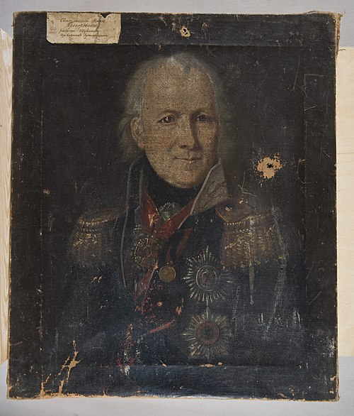
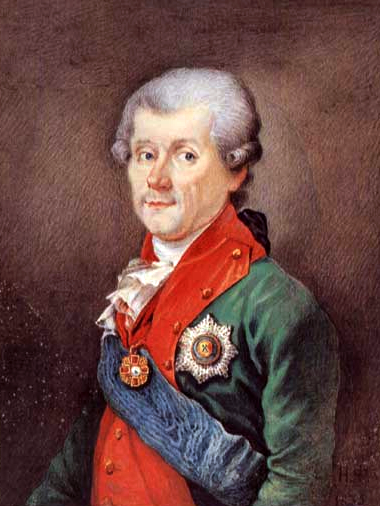
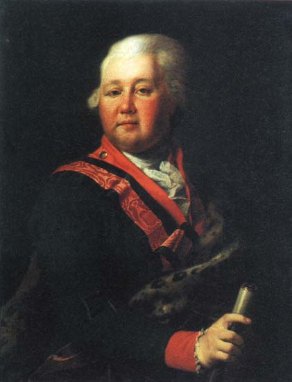
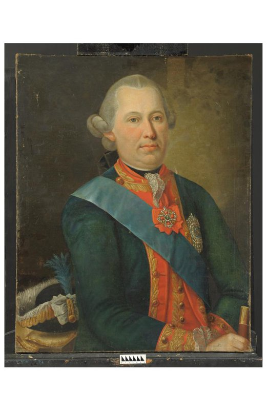
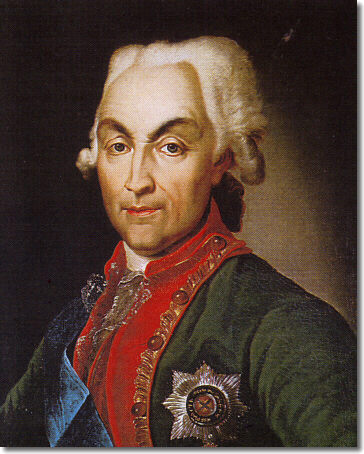
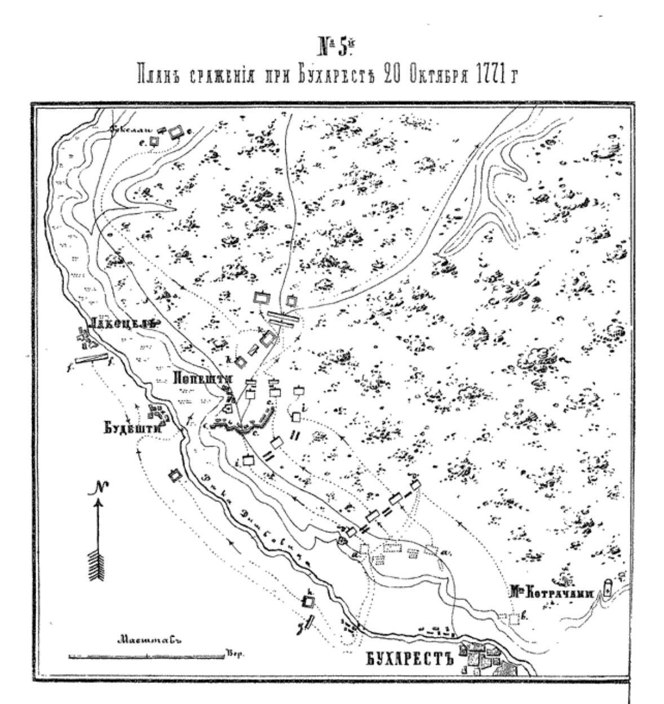
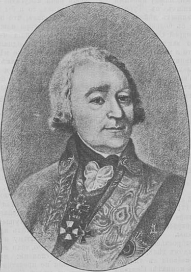

Военные неудачи Османской империи вынудили реорганизовать армию. Мустафа III приказал отказаться от использования нерегулярных войск. Визирь собрал армию из регулярных янычар, улучшив дисциплину. С помощью французских специалистов была усовершенствована артиллерия. Турки сосредоточились на обороне ключевых крепостей и заключили союз с Австрией, надеясь втянуть Россию в войну на два фронта.
ВЗЯТИЕ КРЫМА
Главной целью России в 1771 году стал Крым. 2-я армия (37 тыс. солдат) под командованием Долгорукова начала поход из Полтавы. Турки не смогли собрать достаточные силы для обороны. 12 июня армия подошла к Перекопу, и после штурма крепость была взята. Отряды Щербатова и Брауна захватили Арабат, Керчь, Еникале и другие ключевые точки. Крымские татары прекратили сопротивление, и 1 ноября 1772 года Крымский хан подписал договор о независимости Крыма под покровительством России.



2-я армия выступила из Полтавы 20 апреля и направилась вдоль Днепра. Азовская флотилия содействовала с моря. Османская империя, отвлекшая значительные силы на защиту Дарданелл, Грузии и Константинополя, не смогла организовать достойной обороны Крыма. 12 июня армия Долгорукова подошла к Перекопу, обороняемому 50 тысячами татар и 7 тысячами турок под командованием хана Селим-Герая. В ночь с 13 на 14 июня русские войска начали обстрел укреплений. Штурм был стремительным: русская пехота атаковала Перекопский вал со стороны Чёрного моря, а кавалерия обошла его через Сиваш, атаковав с тыла. К 15 июня крепость Перекоп была взята, потери русских составили 25 убитых и 135 раненых, турок и татар — более 1200 человек.
Дальнейшие успехи были не менее впечатляющими. Отряды князя Ф. Ф. Щербатова и генерал-майора Брауна захватили Арабат, Керчь, Еникале, Гёзлев и другие крепости. К концу июня основные силы татар прекратили сопротивление. Крым был взят за 16 дней. Россия провозгласила независимость Крыма под своим покровительством.
ДЕЙСТВИЯ НА ДУНАЕ
На Дунае русская армия под командованием Румянцева столкнулась с сильными турецкими гарнизонами. Основные силы русских были распределены между тремя дивизиями:
- 1-я дивизия (24,4 тыс.) под командованием самого Румянцева находилась в Молдавии.
- 2-я дивизия (17,6 тыс.), сначала под командованием Олица, а после его смерти — фон Эссена, обороняла фронт от устья Яломицы до Турно.
- 3-я дивизия (11 тыс.) под командованием Вейсмана действовала в районе Браилова.
В феврале 1771 года Олиц атаковал крепость Журжу и взял её после десятидневной осады. Турки потеряли до 8 тысяч человек, русские — 179 убитых и 820 раненых. После смерти Олица командование дивизией принял Репнин, но к лету 1771 года дивизия страдала от болезней и нехватки продовольствия, что осложняло её действия.

Пётр Иванович Олиц

Николай Васильевич Репнин
Несмотря на трудности, в октябре Румянцеву удалось заманить основные силы турок в наступление, и 20 октября русская армия под командованием фон Эссена нанесла туркам поражение при Бухаресте. Турки потеряли около 2000 человек, русские — всего 254.

20 октября 1771 года
3-я дивизия успешно провела набеги на Исакчу, Тулчу и Бабадаг. Эти операции принесли русским значительные трофеи, включая 214 пушек, 58 судов и огромное количество провианта.

МИРНЫЕ ПЕРЕГОВОРЫ
Весной 1772 года Румянцев и визирь Мухсинзаде Мехмед-паша договорились о перемирии. Россия настаивала на независимости Крыма и выгодных условиях мира. Однако противодействие Австрии, недовольной усилением России, затягивало процесс.
После года переговоров, не добившись согласия турок на независимость Крыма, в феврале 1773 года война возобновилась.